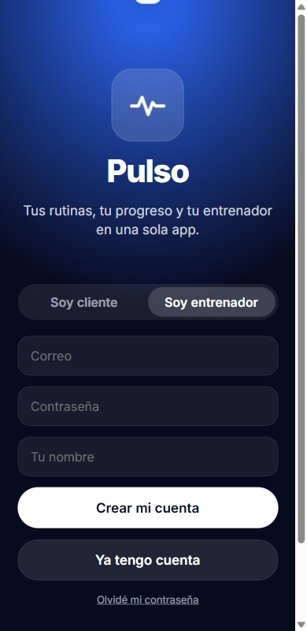

1
Crea tu cuenta de entrenador
- Abre la dirección de arriba en tu celular o computadora.
- Toca Soy entrenador.
- Toca Crear cuenta de entrenador.
- Escribe tu correo, una contraseña (6 o más) y tu nombre.
- Toca Crear mi cuenta. Ya estás dentro.
Guárdala en tu pantalla de inicio para abrirla como app. iPhone: Safari → Compartir → «Agregar a pantalla de inicio». Android: Chrome → ⋮ → «Instalar app».
